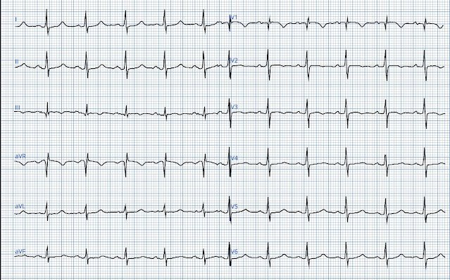
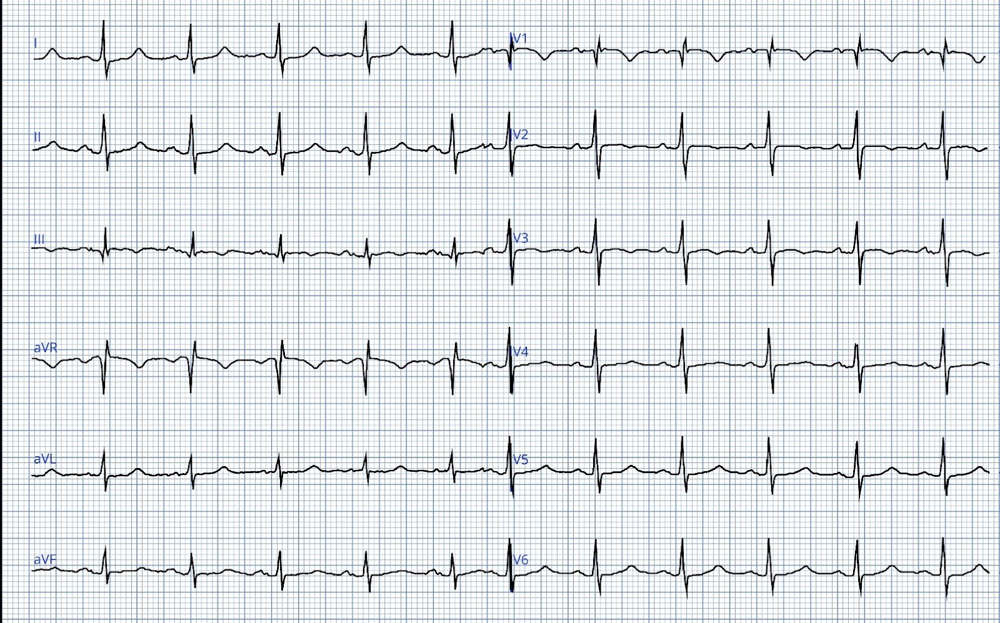
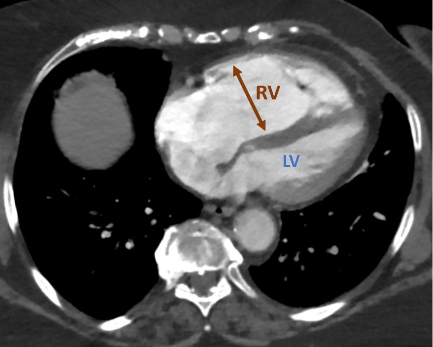
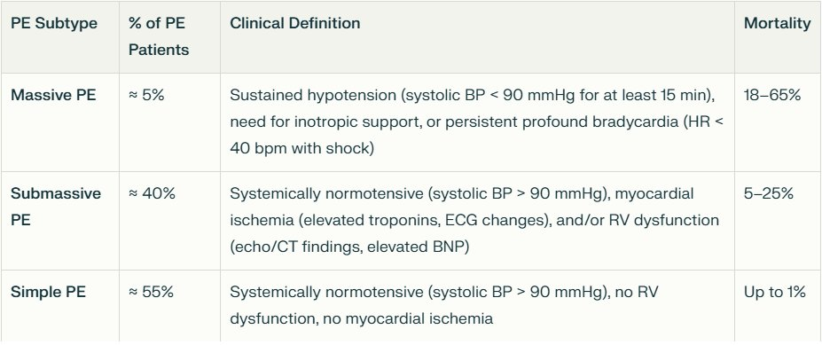
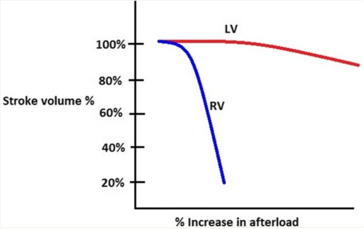
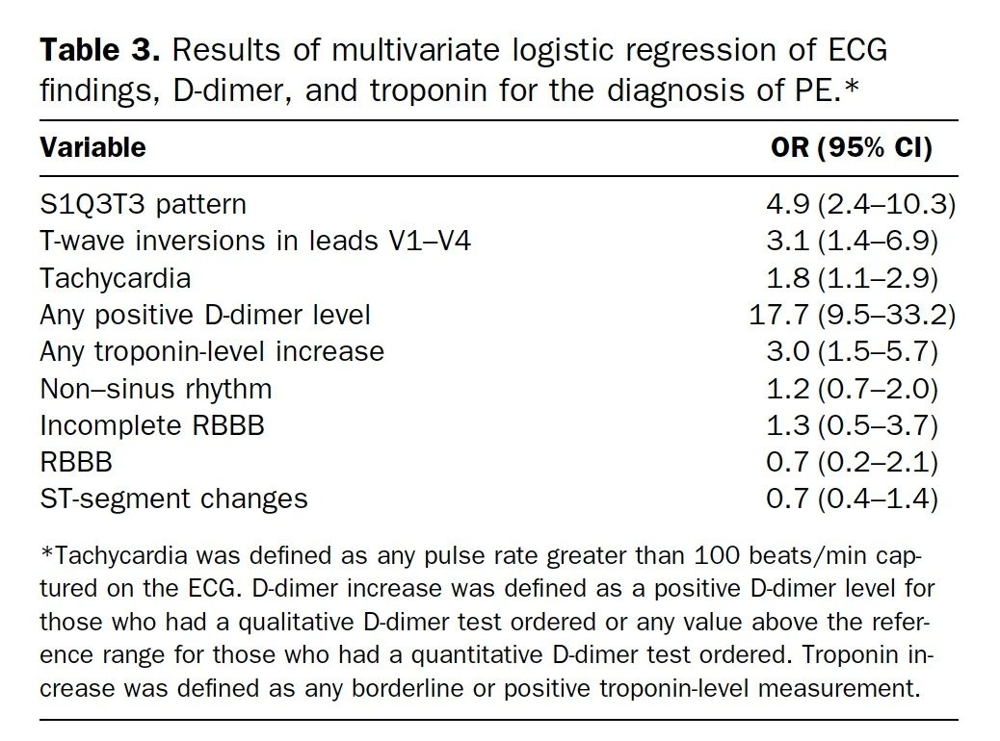
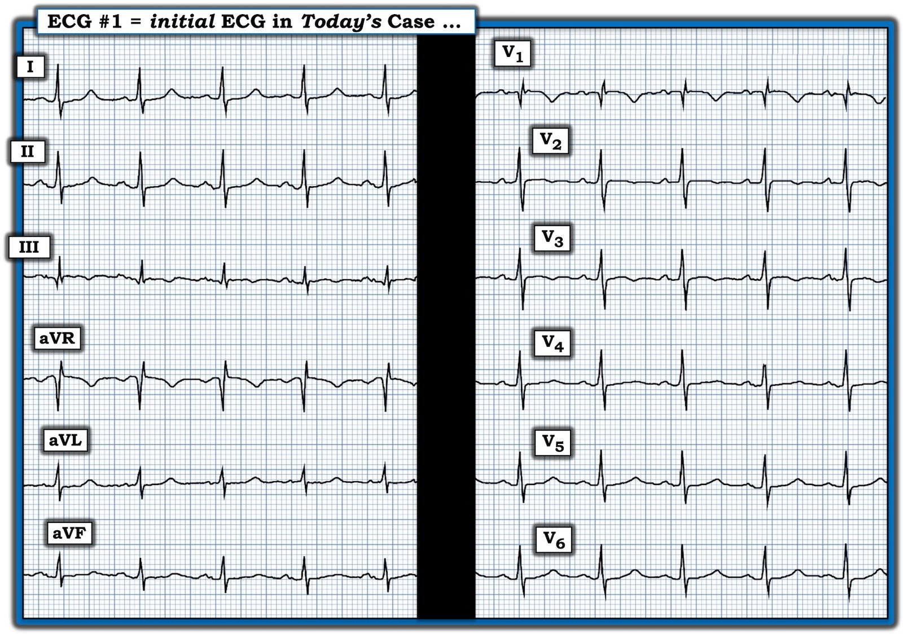
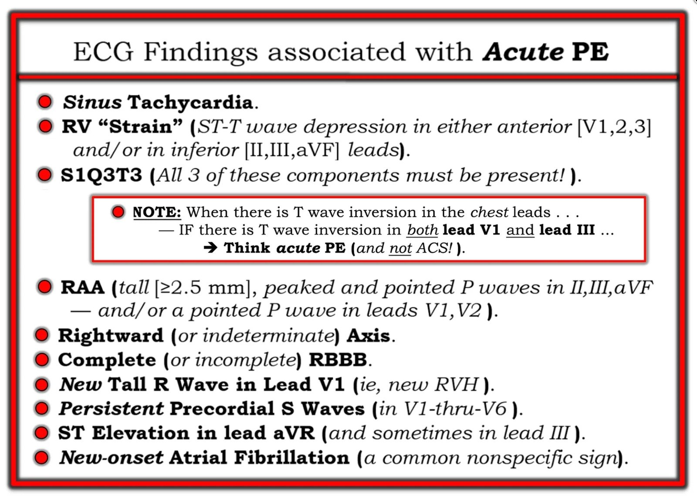
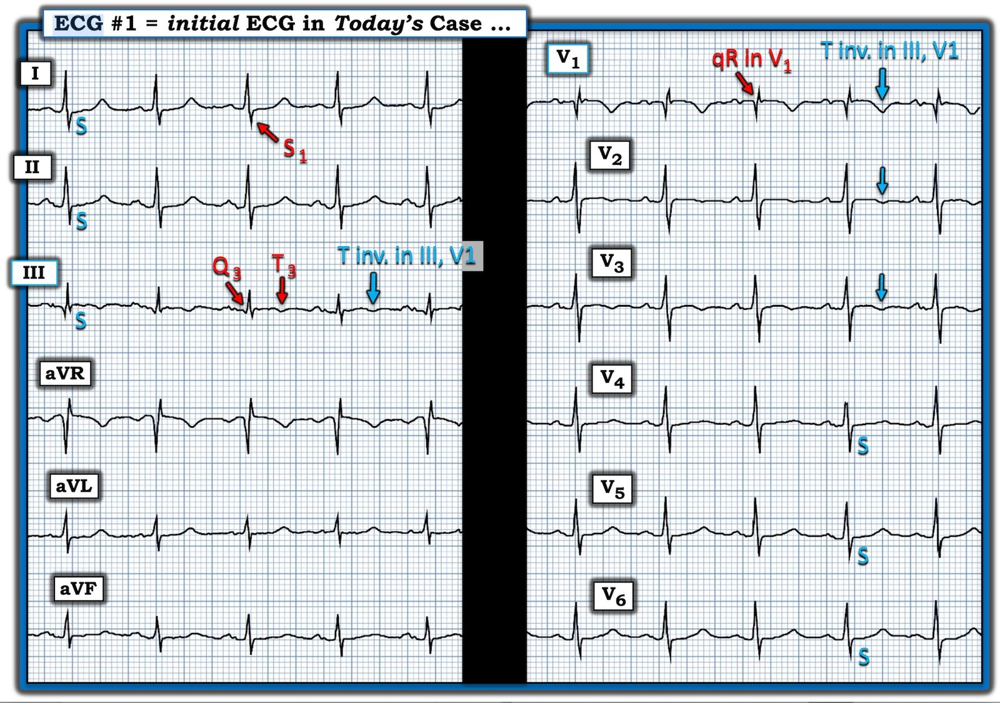

28/07/2025 — Bạn có đoán được chẩn đoán không?
Bản dịch tiếng Việt của bài "Can you guess the diagnosis?" – Dr. Smith’s ECG Blog. Giữ nguyên toàn bộ 8 hình ảnh của bản gốc.


Tôi được một đồng nghiệp cũ gửi điện tâm đồ này, không kèm bối cảnh lâm sàng, và nhờ đọc. Đọc điện tâm đồ mà không có bối cảnh lâm sàng là điều nên tránh khi phải ra quyết định lâm sàng thực sự, nhưng đó có thể là một bài tập thú vị và là cách tốt để học nhận dạng hình ảnh.
Khi không có thông tin lâm sàng, bạn sẽ mô tả điện tâm đồ này thế nào? Nếu có, những đặc điểm nào khiến bạn lo ngại?
Điện tâm đồ #1


Điện tâm đồ cho thấy nhịp xoang tần số nhỉnh hơn 90 lần/phút một chút. QRS hẹp. Đáng chú ý là sóng T đảo ngược ở các chuyển đạo V1-V3. Điện thế QRS ở mức thấp. Chuyển đạo III ngoài sóng q rất nhỏ còn có sóng T đảo ngược.
Smith: Có sóng T đảo ngược ở V1-V3 và sóng T đảo ngược ở chuyển đạo III (và S1Q3T3). Khi chẩn đoán phân biệt là ACS hay PE, và có sóng T đảo ngược ở các chuyển đạo trước tim, thì sự hiện diện của sóng T đảo ngược ở chuyển đạo III có tỷ số khả dĩ (likelihood ratio) CỰC KỲ cao đối với PE.
Câu trả lời của tôi là:
“Có lẽ chưa đủ để chẩn đoán, nhưng cần loại trừ tăng gánh tim phải.”
Đây là một số thông tin đối chiếu lâm sàng: Bệnh nhân là nữ 75 tuổi, thừa cân, khó thở bán cấp trong hai tuần qua. Vào ngày nhập viện, tình trạng khó thở của bà nặng lên, kèm choáng váng khi gắng sức, khiến bà phải đi khám.
Các triệu chứng của bà, cùng với các dấu hiệu trên điện tâm đồ, đã dẫn đến việc đánh giá thêm bằng chụp CT động mạch phổi. Hình ảnh này cho thấy thuyên tắc phổi hai bên kèm tăng gánh tim phải đáng kể. Trong hình kèm theo, các tâm thất được đánh dấu, cho thấy rõ thất phải giãn lớn rõ rệt so với thất trái.
Chụp CT mạch phổi (CTPA)


RV = Thất phải. LV = Thất trái.
Bệnh nhân này có PE lớn. Thuyên tắc phổi dưới diện rộng (submassive) chiếm khoảng 40% tổng số ca PE và liên quan với tỷ lệ tử vong lên đến 25%. Bệnh nhân PE dưới diện rộng vẫn có huyết áp bình thường nhưng thường có nhịp tim nhanh và biểu hiện dấu hiệu tổn thương hoặc rối loạn chức năng cơ tim. Họ có dấu hiệu tăng gánh thất phải trên điện tâm đồ hoặc trên các phương tiện hình ảnh như CT hay siêu âm, và thường có tăng troponin và BNP.
Bảng 1


Bảng 1 tóm tắt đặc điểm và tỷ lệ tử vong của các phân nhóm thuyên tắc phổi khác nhau. Sửa đổi từ (1)
Lúc nhập viện, bệnh nhân của chúng tôi bị giảm oxy máu, có hs-troponin I tăng ở mức 1348 ng/L và NT-proBNP 4555 pg/mL. Bà có huyết áp bình thường, tần số tim khoảng 90 lần/phút. Bà được điều trị bằng heparin truyền tĩnh mạch liên tục, sau đó chuyển sang thuốc chống đông đường uống (OAC). Ranh giới giữa PE dưới diện rộng và PE diện rộng không hề rõ ràng, và nhiều khi khó quyết định ai là người «đủ nặng» để điều trị bằng thuốc tiêu sợi huyết và/hoặc lấy huyết khối.
Ca này minh họa rằng thuyên tắc phổi đe dọa tính mạng, ngay cả khi gây tăng gánh tim phải nặng, vẫn có thể rất khó nhận ra nếu chỉ dựa vào điện tâm đồ, và thường cần đến nghi ngờ lâm sàng cùng các thăm dò hình ảnh để chẩn đoán. Dấu hiệu điện tâm đồ nhạy nhất trong PE là nhịp nhanh xoang, nhưng dấu hiệu này rất không đặc hiệu cho PE.
Thay đổi huyết động nào xảy ra trong PE cấp nặng?
Thất phải có thành mỏng và dễ giãn (compliant), do đó kém thích nghi với sự tăng hậu tải cấp so với thất trái có thành dày, nhiều cơ và kém giãn. Khi hậu tải tăng đột ngột, thất phải thường giãn ra do thành mỏng và cấu trúc dễ giãn của nó.
Thể tích nhát bóp theo hậu tải.


Đường màu đỏ: thất trái. Đường màu xanh: thất phải. Trích lại từ (1)
Khi thể tích nhát bóp thất phải giảm, máu ứ lại trong thất phải dẫn đến giãn buồng này. Nếu thất phải giãn nhiều, nó sẽ cản trở sự đổ đầy thất trái vì tim được bao bọc trong màng ngoài tim sợi. Điều này làm giảm thể tích nhát bóp thất trái và cung lượng tim.
Khác với thất trái, thất phải được cấp máu suốt chu chuyển tim, cả trong tâm thu lẫn tâm trương. Đó là vì áp lực tâm thu thất phải thường thấp hơn huyết áp tâm trương hệ thống, nên dòng máu mạch vành đến thất phải không bị gián đoạn khi thất phải co bóp. Trong PE nặng, thể tích nhát bóp thất trái và cung lượng tim có thể không tạo đủ huyết áp tâm trương để tưới máu thất phải suốt chu chuyển tim, dẫn đến thiếu máu cục bộ thất phải.
Những thay đổi huyết động này có thể gây ngất, sốc hoặc ngừng tim.
NHỮNG ĐIỂM CẦN HỌC:
- Ngay cả PE lớn cũng có thể biểu hiện rất ít, thậm chí không gì, trên điện tâm đồ
- Thất phải dễ giãn và sẽ giãn ra để đáp ứng với tăng hậu tải cấp
- Giãn thất phải trong PE cấp nặng dẫn đến thất trái đổ đầy kém và giảm cung lượng tim (CO).
- Thất phải được cấp máu suốt chu chuyển tim
Tài liệu tham khảo:
- Bryce, Y. C., Perez-Johnston, R., Bryce, E. B., Homayoon, B., & Santos-Martin, E. G. (2019). Pathophysiology of right ventricular failure in acute pulmonary embolism and chronic thromboembolic pulmonary hypertension: a pictorial essay for the interventional radiologist. Tạp chí Insights Into Imaging, tập 10(1). https://doi.org/10.1186/s13244-019-0695-9
Điện tâm đồ trong thuyên tắc phổi:
Điện tâm đồ không nhạy với PE, nhưng khi có các dấu hiệu như S1Q3T3, sóng T đảo ngược ở các chuyển đạo trước, RBBB mới xuất hiện, hoặc nhịp nhanh xoang, thì chúng có tỷ số khả dĩ dương (+). S1Q3T3, hoặc thậm chí chỉ riêng T3, có thể giúp phân biệt Wellens với PE.
S1Q3T3 là gì? Rất ít nghiên cứu định nghĩa S1Q3T3. Nó đã được mô tả từ tận năm 1935, và cả S1 lẫn Q3 đều được định nghĩa là 1,5 mm (0,15 mV). Trong bài báo của Marchik (giả định họ định nghĩa theo cùng cách, mà phần phương pháp không nêu rõ điều này), trong số các bệnh nhân bị nghi ngờ PE, S1Q3T3 gặp ở 8,5% bệnh nhân có PE và 3,3% bệnh nhân không có PE.
Khi troponin dương tính, các dấu hiệu này liên quan đến tổn thương cơ tim, và khi đó PE và nhồi máu cơ tim đứng đầu danh sách chẩn đoán phân biệt, và bài báo của Kosuge (xem bên dưới) được áp dụng.
Kosuge và cs. đã chỉ ra rằng, khi sóng T đảo ngược ở các chuyển đạo trước tim, nếu chúng cũng đảo ngược ở chuyển đạo III và V1, thì thuyên tắc phổi có khả năng cao hơn nhiều so với ACS. Trong nghiên cứu này, (trích nguyên văn) “sóng T âm ở các chuyển đạo III và V1 chỉ được ghi nhận ở 1% bệnh nhân ACS so với 88% bệnh nhân thuyên tắc phổi cấp (APE) (p nhỏ hơn 0,001). Độ nhạy, độ đặc hiệu, giá trị tiên đoán dương và giá trị tiên đoán âm của dấu hiệu này trong chẩn đoán PE lần lượt là 88%, 99%, 97% và 95%. Tóm lại, sự hiện diện của sóng T âm ở cả hai chuyển đạo III và V1 cho phép phân biệt PE với ACS một cách đơn giản nhưng chính xác ở những bệnh nhân có sóng T âm ở các chuyển đạo trước tim.”
Witting và cs. đã khảo sát các bệnh nhân liên tiếp bị PE, ACS, hoặc không bị cả hai. Họ thấy chỉ 11% ca PE có sóng T đảo ngược 1 mm ở cả chuyển đạo III và chuyển đạo V1, so với 4,6% ở nhóm chứng.
Điều này không mâu thuẫn với kết luận của Kosuge và cs., những người đã nghiên cứu một quần thể chọn lọc gồm các bệnh nhân đã biết là bị PE hoặc ACS — tức là tất cả đều thực sự có bệnh. Trong số các bệnh nhân chọn lọc đó, những người đồng thời có sóng T đảo ngược ở các chuyển đạo trước tim bên phải được đưa vào nghiên cứu. Trong số này, sóng T đảo ngược ở chuyển đạo III rất đặc hiệu cho PE. Theo kinh nghiệm của tôi, điều này đúng, nhưng cần được xác nhận bằng một nghiên cứu có phương pháp tương tự. Ủng hộ Kosuge, Ferrari thấy rằng sóng T đảo ngược ở các chuyển đạo trước là dấu hiệu điện tâm đồ thường gặp nhất trong PE diện rộng.
Cuối cùng, Stein và cs. thấy điện tâm đồ bình thường chỉ ở 3 trong 50 bệnh nhân PE diện rộng, và 9 trong 40 bệnh nhân PE không phải diện rộng. Tuy nhiên, ngày nay con số đó sẽ thấp hơn vì chúng ta chẩn đoán được nhiều ca PE nhỏ hơn với triệu chứng tối thiểu.
Đây là một bài báo đáng đọc: Marchik và cs. đã nghiên cứu các dấu hiệu điện tâm đồ của PE trên 6049 bệnh nhân, trong đó 354 người bị PE.
Xin nói rõ: đây đều là những bệnh nhân đang được đánh giá PE, trong khi Kosuge nghiên cứu những người mà chẩn đoán phân biệt chỉ còn lại ACS và PE. Chúng ta nên áp dụng dữ liệu của Kosuge cho ca bệnh ở đây vì troponin dương tính.
Họ tìm thấy các tỷ số khả dĩ dương đối với PE sau đây:
1. S1Q3T3 = 3,7
2. Sóng T đảo ngược ở V1 và V2, = 1,8
3. Sóng T đảo ngược ở V1-V3, = 2,6
4. Sóng T đảo ngược ở V1-V4, = 3,7
5. Blốc nhánh phải không hoàn toàn (incomplete RBBB) = 1,7
6. Nhịp tim nhanh, = 1,8.
Cuối cùng, họ tìm thấy các yếu tố tiên đoán độc lập sau đây đối với PE:


| Lưu ý rằng nhịp tim nhanh chỉ có tỷ số chênh (odds ratio) là 1,8. Hãy nhớ rằng đó là tỷ số chênh so sánh toàn bộ bệnh nhân không bị PE với những người bị PE. Nếu bạn tính OR cho toàn bộ bệnh nhân ACS so với những người không bị ACS, con số này sẽ cao hơn nhiều. Nhịp tim nhanh không thường gặp trong ACS trừ khi có sốc tim hoặc có một bệnh lý thứ hai đồng thời. |
======================================
BÌNH LUẬN CỦA TÔI, bởi KEN GRAUER, MD (28/7/2025):
Tôi thấy phần trình bày ca bệnh hôm nay của Dr. Nossen rất thử thách và sâu sắc vì nhiều lý do.
- Như Dr. Nossen viết — “Ca này minh họa rằng PE (thuyên tắc phổi) đe dọa tính mạng ngay cả khi gây ‘tăng gánh’ thất phải nặng về mặt sinh lý — vẫn có thể rất khó nhận ra nếu chỉ dựa vào điện tâm đồ”.
- Ca này nhấn mạnh tầm quan trọng của Bệnh sử — vốn thực sự thiết yếu để đọc điện tâm đồ trên lâm sàng tối ưu.
- Cuối cùng — ca hôm nay làm nổi bật một loạt dấu hiệu điện tâm đồ tinh tế của bệnh lý phổi đáng kể, mà khi gộp lại trong bối cảnh Bệnh sử lâm sàng — thực sự tương hợp với bệnh cảnh lâm sàng nặng mà bệnh nhân này đang trải qua.
Tầm quan trọng của Bệnh sử:
Tôi đã không nghi ngờ bệnh nhân hôm nay đang trong một đợt PE dưới diện rộng (submassive). Do các ca liên quan đến thiếu máu cục bộ chiếm ưu thế trên hầu hết các diễn đàn điện tâm đồ — thay vào đó tôi đã cân nhắc các mức độ khác nhau của thiếu máu cục bộ dưới nội tâm mạc và/hoặc OMI gần đây ở thành dưới — thất phải — hoặc OMI trước vách, mà hiện có thể đang ở bất kỳ giai đoạn nào của “giả bình thường hóa” và/hoặc tái tưới máu.
- Điều này làm nổi bật thêm một “Thông điệp cần nhớ” nữa từ ca hôm nay — đó là đọc điện tâm đồ trên lâm sàng một cách tối ưu đòi hỏi một cách tiếp cận hệ thống tuần tự. Ý tôi là bất kể người đọc có (hay không) biết bệnh sử lâm sàng vào lúc được đưa cho xem điện tâm đồ — thì vẫn tuân theo cùng một cách tiếp cận hệ thống tuần tự đó.
- Xin nhấn mạnh: Những người đọc chuyên gia, giàu kinh nghiệm làm việc có hệ thống một cách tự động (và tức thì) — đến mức việc làm có hệ thống không làm bạn chậm lại. Nhưng nó thực sự giúp tránh bỏ sót những dấu hiệu có thể quan trọng mà rất dễ bị bỏ qua nếu ta vội đi đến kết luận.
Các dấu hiệu điện tâm đồ trên bản ghi hôm nay:
Để rõ ràng, trong Hình 1 — tôi đã trình bày lại điện tâm đồ hôm nay. Suy nghĩ của tôi khi xem bản ghi này mà không có bất kỳ bệnh sử nào như sau:
- Nhịp là nhịp xoang — dù tần số tim tương đối nhanh (với khoảng R-R dài hơn 3 ô lớn một chút = tần số ~90/phút).
- Về các khoảng — cả khoảng PR lẫn thời gian QRS đều bình thường. QTc có vẻ ở mức giới hạn, dù khó đánh giá do tần số khá nhanh.
- Trục mặt phẳng trán bình thường (khoảng +60 độ).
- Không lớn buồng tim.
Về Thay đổi sóng Q–R–S–T:
- Sóng Q — Có vẻ có một sóng q nhỏ ở chuyển đạo III (dù, như thường gặp ở chuyển đạo III — có một chút biến đổi hình dạng QRS theo hô hấp).
- Tăng tiến sóng R — Có vùng chuyển tiếp sớm (tức là, sóng R đã trở nên chiếm ưu thế ngay từ chuyển đạo V2 — trong khi bình thường điều này chỉ xảy ra ở các chuyển đạo V3-đến-V4, hoặc muộn hơn).
- Thấy phức bộ qR ở chuyển đạo V1 — có thể là IRBBB (blốc nhánh phải không hoàn toàn) hoặc đơn giản là khử cực phần cuối ở đường ra thất phải.
- Có rất nhiều sóng S (thấy ở các chuyển đạo I,II,III; aVL,aVF: và ở các chuyển đạo V2-đến-V6).
- Có nhiều bất thường sóng ST-T tinh tế, ý nghĩa chưa chắc chắn. Bao gồm ST thẳng đuỗn ở nhiều chuyển đạo, thường kèm gợi ý ST chênh xuống.
- Có đoạn ST dạng vòm (coving) tinh tế ở nhiều chuyển đạo (các chuyển đạo III,aVR; V1,V2,V3) — kèm gợi ý ST chênh lên nhẹ ở các chuyển đạo III, aVR và V1.
- Có sóng T đảo ngược nông ở các chuyển đạo III, V1,V2,V3.
NHẬN ĐỊNH CỦA TÔI về điện tâm đồ #1: Tôi thật sự rất muốn biết bệnh sử. Một mặt — phần lớn (tất cả) các dấu hiệu nêu trên có thể không đặc hiệu và không có ý nghĩa lâm sàng. Nhưng mặt khác tôi nghĩ rằng Dr. Nossen sẽ không trình bày ca này nếu không có một dạng bệnh lý nào đó!
- Tôi nghĩ điện tâm đồ này có thể là hậu quả của bệnh tim thiếu máu cục bộ. Nếu phần Bệnh sử bị thiếu trong ca hôm nay là bệnh nhân này có CP (đau ngực) mới — nhưng cơn đau ngực này đã giảm đáng kể (hoặc hết) vào lúc ghi điện tâm đồ #1 — thì tình trạng ST thẳng đuỗn lan tỏa kèm gợi ý ST chênh lên ở chuyển đạo aVR có thể phản ánh một mức độ nào đó của DSI (thiếu máu cục bộ dưới nội tâm mạc lan tỏa).
- Đoạn ST dạng vòm tinh tế kèm chênh lên ở chuyển đạo III — cùng ST dạng vòm rõ hơn và sóng T đảo ngược sâu hơn ở chuyển đạo V1 có thể phản ánh nhồi máu thành dưới gần đây và/hoặc nhồi máu thất phải — nay có phần giả bình thường hóa do các thay đổi sóng ST-T của tái tưới máu tự phát. Hoặc có lẽ vị trí của OMI gần đây là do tắc LAD, sau đó ST chênh lên đã hết trên đường tiến tới hình thành sóng T tái tưới máu, xét đến ST dạng vòm ở các chuyển đạo V1,V2,V3?
- Nhưng mặt khác — có một số dấu hiệu điện tâm đồ có thể phù hợp với bệnh lý phổi, có thể mới xảy ra gần đây.
================================
Hình 1: Tôi đã trình bày lại điện tâm đồ hôm nay. Không có bệnh sử.


================================
Các dấu hiệu điện tâm đồ của PE cấp:
Trong nhiều năm qua — chúng tôi đã trình bày nhiều ca minh họa các dấu hiệu điện tâm đồ có thể gặp của PE cấp (Xem phần BÌNH LUẬN CỦA TÔI ở cuối trang trong bài ngày 17 tháng Sáu năm 2024, cùng nhiều bài khác). Chính từ bài ngày 17 tháng Sáu năm 2024 này — tôi đã trình bày lại trong Hình 2 danh sách các dấu hiệu điện tâm đồ liên quan đến PE cấp . Như chúng ta sẽ thấy ngay sau đây — điện tâm đồ trong Hình 1 gợi ý nhiều dấu hiệu trong số này:
- Xin nhấn mạnh: Các dấu hiệu điện tâm đồ mà tôi sắp chỉ ra trên bản ghi hôm nay cực kỳ tinh tế — đó là lý do vì sao, khi không biết bệnh sử của ca hôm nay, tôi đã không nghi ngờ bệnh nhân đang bị PE dưới diện rộng. Nhưng ngay khi tôi biết người phụ nữ lớn tuổi này đến khám vì khó thở tăng dần trong 2 tuần — tất cả các dấu hiệu điện tâm đồ tinh tế trên bản ghi hôm nay bắt đầu trở nên có ý nghĩa!
- ĐIỂM THEN CHỐT (PEARL): Chúng ta được biết bệnh nhân hôm nay “thừa cân”. Bà thừa cân đến mức nào (điều mà dĩ nhiên sẽ thấy ngay khi chúng ta nhìn thấy bệnh nhân) — có thể ảnh hưởng đáng kể đến việc vì sao nhiều dấu hiệu điện tâm đồ hôm nay lại tinh tế như vậy (tức là, NẾU bệnh nhân này thừa cân đáng kể — điều đó có thể giải thích điện thế QRS tổng thể tương đối khiêm tốn, cũng như tình trạng sóng ST-T dẹt không đặc hiệu mà có thể còn rõ hơn trên điện tâm đồ nền của bệnh nhân).
- T.B. (P.S.): Một dấu hiệu điện tâm đồ liên quan mà tôi không đưa vào Bảng ở Hình 2 của mình — là sự hiện diện của hình ảnh qR ở chuyển đạo V1. Như tôi đã nêu bật trong BÌNH LUẬN CỦA TÔI ở cuối trang trong bài ngày 12 tháng Hai năm 2023 — trong bối cảnh lâm sàng phù hợp (tức là, ở bệnh nhân mà chúng ta đang cân nhắc PE cấp) — dấu hiệu điện tâm đồ hình ảnh qR ở chuyển đạo V1 thường tương quan với tăng áp phổi đáng kể (dấu hiệu điện tâm đồ này phản ánh thất phải giãn nhiều do tăng áp lực thất phải).
Hãy tự thử thách!
- Hãy XEM LẠI điện tâm đồ trong Hình 1. Bạn nhận ra được bao nhiêu dấu hiệu trong Hình 2?
================================
Hình 2: Các dấu hiệu điện tâm đồ liên quan đến PE cấp (từ BÌNH LUẬN CỦA TÔI trong bài ngày 17 tháng Sáu năm 2024).


================================
Xem lại điện tâm đồ #1:
Như Dr. Nossen đã nhấn mạnh — ca hôm nay minh họa rằng ngay cả PE có khả năng đe dọa tính mạng cũng có thể khó nhận ra từ một điện tâm đồ đơn lẻ. Dù vậy, khi đã biết bệnh sử khó thở tăng dần trong 2 tuần của người phụ nữ lớn tuổi này — có thể nhận ra nhiều dấu hiệu điện tâm đồ trong Hình 2.
- Không — không có nhịp nhanh xoang, vì tần số tim không vượt quá 100/phút. Nhưng tần số tim ~90/phút của bệnh nhân này nhanh hơn tần số tim lúc nghỉ thông thường.
- Dù sóng T đảo ngược trên điện tâm đồ #1 không sâu — sóng T đảo ngược ở các chuyển đạo trước , cũng như ở chuyển đạo III (mũi tên XANH trong Hình 3) — phù hợp với “tăng gánh” thất phải.
- Có hình ảnh S1Q3T3! Một lần nữa — biên độ sóng S ở chuyển đạo I — cùng sóng Q và độ sâu của sóng T đảo ngược ở chuyển đạo III không lớn, nhưng chúng có hiện diện! Cùng với tất cả các dấu hiệu điện tâm đồ gợi ý khác — sự hiện diện của hình ảnh S1Q3T3 làm tăng khả năng có PE đáng kể.
- LƯU Ý: Như được nêu bật trong khung chữ nhật ĐỎ ở Hình 2 — Khi có sóng T đảo ngược ở các chuyển đạo trước ngực — và cả hai chuyển đạo III và V1 đều có sóng T đảo ngược — thì PE cấp trở thành nguyên nhân có khả năng cao hơn nhiều so với bệnh tim thiếu máu cục bộ!
- Không có RAA và trục lệch phải trong Hình 3.
- Có hình ảnh qR ở chuyển đạo V1! Điều này có thể phản ánh RBBB không hoàn toàn (hoàn toàn có thể vì kèm theo sóng s tận ở các chuyển đạo bên trái I và V6) — và/hoặc — hình ảnh qR này có thể phản ánh tăng áp phổi (như phần T.B. tôi đã viết ở trên) — hoặc nhiều khả năng nhất là cả hai.
- Chẩn đoán RVH trên điện tâm đồ thường khó — vì thất trái bình thường dày và lớn hơn nhiều so với thất phải bình thường. Nhưng xét đến sóng S biên độ nhỏ ở chuyển đạo V1 — sóng R ở chuyển đạo này trông cao không tương xứng, do đó có thể là một biểu hiện của RVH.
- Hai dấu hiệu của bệnh lý phổi là: i) Sóng S tồn tại dai dẳng ở các chuyển đạo trước tim (persistent precordial S waves); — và, ii) Sóng S ở các chuyển đạo I,II,III (các chữ “S” màu XANH trong Hình 3).
- Chẳng phải đoạn ST ở chuyển đạo aVR “trông” có vẻ chênh lên sao? (dù mức ST chênh lên ở chuyển đạo này, nếu có, chỉ khiêm tốn).
Tóm lại: Chỉ sau khi tôi biết bệnh nhân hôm nay có bệnh sử khó thở tăng dần trong 2 tuần — tôi mới phân tích sâu hơn ý nghĩa lâm sàng tiềm tàng của các dấu hiệu tinh tế nêu trên. Nhưng trong bối cảnh lâm sàng này — tất cả các dấu hiệu điện tâm đồ nêu trên hoàn toàn phù hợp với các dấu hiệu lâm sàng và hình ảnh chụp CT mạch phổi vốn cho phép chẩn đoán PE dưới diện rộng cấp ở bệnh nhân hôm nay.
================================
Hình 3: Tôi đã chú thích điện tâm đồ hôm nay — làm nổi bật các dấu hiệu của PE cấp.


================================